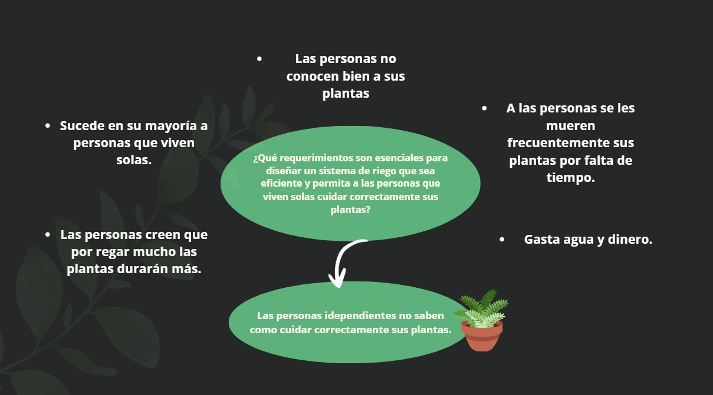

ANÁLISIS DE DATOS Y AJUSTES AL DISEÑO
En la quinta semana, analizamos los datos recopilados de las entrevistas y las pruebas realizadas en el prototipo. Este análisis fue crucial para ajustar el diseño del sistema y asegurarnos de que estamos cumpliendo con las expectativas y necesidades de los usuarios. Comenzamos a identificar áreas de mejora y posibles ajustes que podrían hacer que el sistema sea más efectivo y fácil de usar.
Se revisaron tanto los aspectos técnicos como los funcionales del sistema, como la precisión del sensor de humedad, la capacidad de la bomba de agua, y la facilidad de uso del sistema. A partir de los comentarios de los usuarios, se identificaron áreas en las que el sistema podía mejorarse para facilitar la interacción con los usuarios, especialmente aquellos que no están familiarizados con tecnologías complejas.
Ajustes al Diseño del Sistema
En base al análisis de los datos, decidimos realizar varios ajustes al diseño del sistema. Uno de los cambios más importantes fue la optimización del sensor de humedad para asegurar lecturas más precisas y una mejor respuesta en el sistema de riego. También mejoramos el sistema de control de la bomba, añadiendo más opciones para personalizar el riego según las necesidades de las plantas.
Además, se agregó un modo de ahorro de energía para garantizar que el sistema sea más eficiente en términos de consumo eléctrico. Estos ajustes permitirán que el sistema se adapte mejor a las diferentes condiciones y necesidades de riego de cada hogar o usuario, al mismo tiempo que minimiza el desperdicio de agua.
Resultados Esperados
Esperamos que estos ajustes mejoren la precisión y eficiencia del sistema. También anticipamos que los usuarios tendrán una experiencia más fluida y satisfactoria, con menos complicaciones y un sistema más intuitivo. Los comentarios adicionales de los usuarios se seguirán recopilando para ajustar aún más el sistema y asegurar que sea lo más funcional posible.
En resumen, la Semana 5 fue fundamental para mejorar el diseño del sistema basándonos en los datos recopilados y en los comentarios directos de los usuarios. Estamos en el camino correcto para crear un sistema de riego automatizado que cumpla con las expectativas y sea fácil de usar.